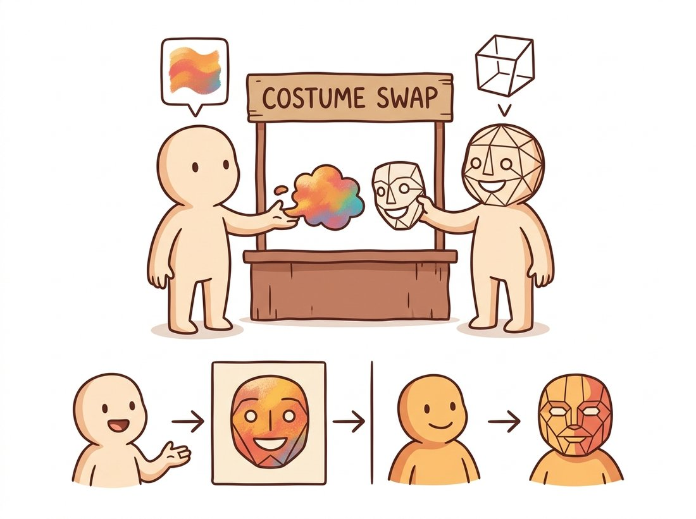

"People say I'm just a wave. But shift me half a cycle and the whole picture falls apart. Phase is character."
A Slightly Out-of-Phase Sinusoid
Every image, without exception, can be written exactly as a weighted sum of two-dimensional sinusoidal waves, and the list of weights (the spectrum) is just the same image in a different coordinate system. Nothing is lost and nothing is approximated in the conversion; what changes is which questions become easy. Repetition, texture, blur, sharpness, and sampling all turn from vague visual impressions into precise statements about which waves are present and how strong they are. This section builds that intuition with pictures and a few dozen lines of NumPy, before Section 4.2 makes the machinery formal.
In Chapter 3 you processed images in the domain they arrive in: a grid of intensities indexed by position. That viewpoint is natural but it hides structure. A striped shirt and a plain wall look completely different as pixel arrays, yet the shirt is, in a precise sense, mostly one number: the frequency of its stripes. This section introduces the second great coordinate system of image processing, where the axes are not "where" but "how fast things change". Everything else in this chapter, filtering, aliasing, pyramids, and wavelets, is built on the intuition assembled here (the illustration below makes the central idea concrete: an image is a choir of sine waves singing in unison).
1. What "Frequency" Means in an Image Beginner
Start with sound, where frequency is familiar. A microphone records air pressure as a function of time, and Fourier's claim is that any such recording is a sum of pure tones: sine waves of different frequencies, loudnesses, and starting offsets. A bass note contributes a slow wave, a cymbal contributes fast ones. The recording and its list of tones are interchangeable descriptions.
An image is the same story with two changes. First, the signal varies over space rather than time, so we speak of spatial frequency: how rapidly intensity changes as you move across the image, measured in cycles per pixel or cycles per image width. Second, space is two-dimensional, so each elementary wave needs a direction as well as a rate. A wave can undulate left-to-right, top-to-bottom, or at any angle in between. Slowly varying illumination, like the soft gradient across a clear sky, is low frequency. A picket fence, a houndstooth jacket, or the sensor noise from Chapter 1 is high frequency. Most natural images are dominated by low frequencies, with energy falling off steeply as frequency rises; this single statistical fact will explain JPEG's success later in the chapter.
The pixel array answers "what is the intensity at position $(x, y)$?" The spectrum answers "how much of the wave with frequency $(u, v)$ does this image contain?" These are two coordinate systems for the same vector space, connected by an invertible linear transform. You lose nothing by switching views, and operations that are global and awkward in one view (such as removing a repeating pattern) become local and trivial in the other. Choosing the right domain for an operation is half of classical image processing.
2. The 2D Sinusoid: Frequency, Orientation, Amplitude, Phase Beginner
The atom of the frequency domain is the two-dimensional sinusoidal grating:
$$s(x, y) = A \cos\!\big(2\pi (u_0 x + v_0 y) + \phi\big)$$
Four numbers define it completely. The pair $(u_0, v_0)$ sets both how fast the wave oscillates and in which direction: the stripes run perpendicular to the vector $(u_0, v_0)$, and the number of cycles you cross per unit distance is $\sqrt{u_0^2 + v_0^2}$. The amplitude $A$ sets the contrast between crests and troughs. The phase $\phi$ slides the whole pattern along its direction of travel without changing its look. Generating a few gratings makes this concrete:
# Build a few pure 2D sinusoidal gratings and display them side by side.
# Each grating is fixed by its frequency pair (u, v), amplitude, and phase,
# so varying (u, v) alone changes stripe fineness and orientation.
import numpy as np
import matplotlib.pyplot as plt
H, W = 256, 256
yy, xx = np.mgrid[0:H, 0:W] # row (y) and column (x) coordinates
def grating(u, v, phase=0.0, amplitude=1.0):
"""2D sinusoid with u cycles across the width and v cycles down the height."""
return amplitude * np.cos(2 * np.pi * (u * xx / W + v * yy / H) + phase)
fig, axes = plt.subplots(1, 4, figsize=(12, 3))
for ax, (u, v) in zip(axes, [(4, 0), (16, 0), (0, 8), (10, 10)]):
ax.imshow(grating(u, v), cmap="gray")
ax.set_title(f"u={u}, v={v}")
ax.axis("off")
plt.tight_layout()
plt.show()Each grating you just generated corresponds to exactly one pair of points in the frequency plane (one point at $(u_0, v_0)$ and its mirror at $(-u_0, -v_0)$, a symmetry explained in Section 4.2). Figure 4.1.1 shows the mapping: coarse stripes sit near the center of the frequency plane, fine stripes far from it, and the angle of the dot pair matches the orientation of the stripes. Learning to move mentally between the two panels of this figure is the core skill of the section.
3. Building Images Out of Waves Beginner
Decomposition only feels real once you run it in reverse. Can smooth, wavy ingredients really add up to something hard-edged? The classic demonstration is the square wave: a vertical black-and-white bar pattern with razor-sharp transitions. Fourier analysis says it equals an infinite sum of odd harmonics with amplitudes falling as $1/k$:
$$\mathrm{sq}(t) = \frac{4}{\pi} \sum_{k=1,3,5,\dots} \frac{\sin(2\pi k t)}{k}$$
Here $t$ runs along one row of the image and each term is a sine wave $k$ times faster than the slowest one (the fundamental). Only odd $k$ appear because the even harmonics would be symmetric in a way that fights the square wave's shape and cancels out, and the $1/k$ weighting means each faster wave contributes less, so the sum converges. The code below truncates this sum at increasing numbers of terms and renders each truncation as an image, so you can watch edges sharpen as high frequencies join the choir:
# Synthesize a square-wave bar pattern from its odd harmonics, truncating
# the Fourier series at increasing term counts to watch edges sharpen and
# the Gibbs overshoot cling stubbornly to every transition.
n_terms = [1, 3, 11, 101] # how many odd harmonics to keep
t = xx / W # horizontal coordinate in [0, 1)
fig, axes = plt.subplots(1, len(n_terms), figsize=(12, 3))
for ax, n in zip(axes, n_terms):
wave = np.zeros_like(t, dtype=np.float64)
for k in range(1, 2 * n, 2): # k = 1, 3, 5, ... (n odd harmonics)
wave += (4 / (np.pi * k)) * np.sin(2 * np.pi * 4 * k * t)
ax.imshow(wave, cmap="gray", vmin=-1.3, vmax=1.3)
ax.set_title(f"{n} harmonic(s)")
ax.axis("off")
plt.tight_layout()
plt.show()Two lessons hide in this output. First, sharp edges are expensive: they require contributions from arbitrarily high frequencies, which is why blurring (removing high frequencies) always softens edges, as you saw operationally with the Gaussian kernels of Chapter 3. Second, the stubborn ripple that clings to each edge no matter how many terms you add is the Gibbs phenomenon, an overshoot of about 9 percent that merely squeezes closer to the edge as frequencies are added. It will return in Section 4.3 as the "ringing" artifact of ideal low-pass filters, and you will know exactly whom to blame.
4. Amplitude and Phase: Who Carries the Picture? Intermediate
Each frequency component of a real image carries two numbers, conveniently packed into one complex value $F(u, v) = |F(u, v)|\, e^{j \angle F(u, v)}$. The magnitude $|F(u,v)|$ says how strongly that wave is present; the phase $\angle F(u,v)$ says where its crests sit. A natural guess is that amplitude, the "how much", matters most. The most instructive experiment in classical image processing says otherwise. Take two unrelated photographs, compute both spectra, and recombine them crosswise: the amplitude of one with the phase of the other.
# Swap the amplitude and phase spectra of two unrelated photographs to test
# which one carries the visible structure. Each hybrid keeps one image's
# amplitude and the other's phase, then inverts back to the spatial domain.
import numpy as np
from skimage import data
from skimage.color import rgb2gray
img_a = rgb2gray(data.astronaut()) # 512 x 512, floats in [0, 1]
img_b = data.camera().astype(np.float64) / 255.0 # 512 x 512
FA, FB = np.fft.fft2(img_a), np.fft.fft2(img_b)
amp_a, phase_a = np.abs(FA), np.angle(FA)
amp_b, phase_b = np.abs(FB), np.angle(FB)
# Marry the amplitude of one image to the phase of the other
hybrid_1 = np.real(np.fft.ifft2(amp_a * np.exp(1j * phase_b)))
hybrid_2 = np.real(np.fft.ifft2(amp_b * np.exp(1j * phase_a)))
# hybrid_1 is recognizably the cameraman; hybrid_2 is recognizably
# the astronaut. Phase, not amplitude, decides what you see.The result is unambiguous: each hybrid resembles the image that contributed its phase. Amplitude tells you an image's statistical texture, how much energy lives at each frequency and orientation, but phase encodes where edges align, and aligned edges are what your visual system reads as objects. This is not just a parlor trick. It explains why amplitude-only descriptors are weak at recognition, and it powers practical methods: Fourier Domain Adaptation (FDA, CVPR 2020) makes synthetic training images look like real-camera images by swapping low-frequency amplitude between domains while preserving each image's own phase, and therefore its content. The illustration below dramatizes the swap as a costume exchange: the character who donates the edge outline (phase) is the one you still recognize.

The magnitude spectrum of almost every natural photograph looks nearly the same: a bright blob at the center decaying smoothly outward, roughly as $1/f$. What distinguishes a face from a forest is almost entirely in the phase, the relative alignment of the waves. Whenever you inspect only magnitude spectra (as we do for filter design), remember you are looking at the part of the data that is most interchangeable between images, which is exactly why it is the right part to manipulate when you want to change appearance without destroying content.
The phase-swap experiment was popularized by Oppenheim and Lim in a 1981 Proceedings of the IEEE paper titled "The importance of phase in signals". It has been re-run by generations of students with whatever pair of test images their era favored, and it has never once come out the other way. Phase is undefeated.
Because the magnitude spectrum is itself displayed as a picture (the bright central blob, the oriented streaks), students often treat it as the image's full frequency representation, as if you could read the scene off it or invert it back. In fact the magnitude is only half the transform: the phase-swap experiment above just proved that almost all of what you recognize as the scene lives in the phase, which the magnitude image throws away entirely. This is also why the magnitude spectra of a face, a forest, and a city street all look like nearly the same $1/f$ blob: a recognizable spectrum picture does not mean you can recover the image, and two utterly different photographs can share an almost identical magnitude. Inverting np.abs(F) alone (discarding phase) returns noise, not the picture. Treat a magnitude spectrum as a map of which waves are present and how strong, never as the image itself.
5. Reading a Spectrum Like a Map Intermediate
Once you can generate spectra (the full recipe, with shifting and log scaling, comes in Section 4.2), a few reading rules cover most of what you will ever see. The bright center is the DC component and the low frequencies: overall brightness and large smooth regions. Energy spreads outward as the image gains fine detail. A strong oriented edge in the image produces a streak through the spectrum's center perpendicular to the edge, because an edge is locally a half-built square wave needing many collinear harmonics. A repeating pattern, like fabric weave or a printed halftone, produces isolated bright dots at the pattern's frequency and its harmonics. Noise sprinkles energy roughly uniformly everywhere, which is why the denoising filters of Chapter 7 are, at heart, attempts to keep the signal's spectrum while discarding the noise's.
Who: A quality engineer at a mid-size textile mill running camera-equipped inspection stations over its weaving looms.
Situation: Woven fabric is an almost perfectly periodic structure. The mill needed to catch weaving defects (a missed weft thread, a worn needle producing a doubled pick) within seconds, before hundreds of meters of flawed fabric wound onto the roll.
Problem: Pixel-space rules kept failing. Template matching broke under small fabric shifts and lighting drift, and per-pixel difference against a golden sample flagged nothing but false alarms, since no two meters of healthy fabric are pixel-identical.
Decision: The engineer switched the detector to the frequency domain. A healthy weave produces a stable lattice of bright peaks in the magnitude spectrum, one family of peaks per thread direction. The system tracked the energy at those peak locations and the energy between them, using a rolling baseline.
Result: A broken needle now announced itself within two seconds as a smeared peak plus new energy between lattice points, independent of where in the frame the defect sat, because the Fourier magnitude is insensitive to translation. False alarms dropped to near zero and scrap per incident fell from hundreds of meters to single digits.
Lesson: Periodic structure that is messy to characterize pixel by pixel becomes a handful of bright dots in the frequency domain. When the thing you care about is repetition, inspect the spectrum, not the pixels.
It is worth knowing what the transform looks like computed naively, if only to appreciate what the library call replaces. A direct implementation of the 2D discrete Fourier transform is four nested loops: for every output frequency $(u, v)$, sum over every pixel $(x, y)$ a term $f(x,y)\,e^{-j2\pi(ux/M + vy/N)}$. At $512 \times 512$ that is $512^4 \approx 6.9 \times 10^{10}$ complex multiply-adds, hours of pure Python. The library equivalent is one line.
A from-scratch 2D DFT is roughly 20 lines of quadruple-nested loops with $O(M^2N^2)$ cost. NumPy reduces it to a single call with $O(MN \log MN)$ cost:
F = np.fft.fft2(img) # full complex spectrum in one call
mag, phase = np.abs(F), np.angle(F)That is a 20-to-1 reduction in code and a roughly 50,000-fold reduction in arithmetic at 512×512. Internally NumPy applies the Cooley-Tukey factorization (recursive butterflies), exploits the symmetry of real inputs when you use rfft2, and runs cache-friendly, vectorized inner loops. Section 4.2 dissects exactly what this call computes.
The wave decomposition is having a renaissance inside neural networks. Networks exhibit spectral bias: they learn low-frequency content first and struggle with fine detail, which is why Fourier feature encodings (Tancik et al., NeurIPS 2020) feed coordinates through banks of sinusoids before the network sees them, the trick that makes NeRF-style methods sharp. FreeU (CVPR 2024) showed that simply re-weighting low-frequency backbone features against high-frequency skip connections inside a diffusion U-Net improves diffusion model outputs with zero retraining. And spectrum reading has become forensic: generated images carry characteristic frequency fingerprints, grid-like spectral peaks left by upsampling layers, and detection work from Corvi et al. (ICASSP 2023) through the 2024-2025 wave of AI-image detectors leans on exactly the magnitude-spectrum inspection skills this section teaches.
Without running any code, sketch the magnitude spectrum (as dots, streaks, or blobs in the (u, v) plane) of: (a) an image of fine horizontal stripes; (b) the same stripes rotated 30 degrees; (c) a checkerboard; (d) a perfectly uniform gray image; (e) a photograph of a picket fence in front of a smooth sky. For each, state which features are dot pairs, which are streaks, and why the spectrum is symmetric about the origin.
Extend Code 4.1.3: instead of swapping spectra between two images, take one photograph and reconstruct it twice, once keeping its phase but replacing the amplitude with uniform random values, and once keeping its amplitude but replacing the phase with uniform random values in $[-\pi, \pi)$. (Be careful to keep the conjugate symmetry of the spectrum so the reconstruction stays real, or simply take the real part.) Which reconstruction is recognizable? Display both and explain the result in one paragraph.
Modify Code 4.1.2 to extract a single horizontal scanline of the synthesized bar pattern and measure the maximum overshoot above 1.0 as a function of the number of harmonics: n = 5, 25, 125, 625. Plot overshoot against n. Does the overshoot amplitude shrink toward zero, or does it converge to a constant while narrowing in width? Relate your finding to what you should expect from the ideal low-pass filter in Section 4.3.